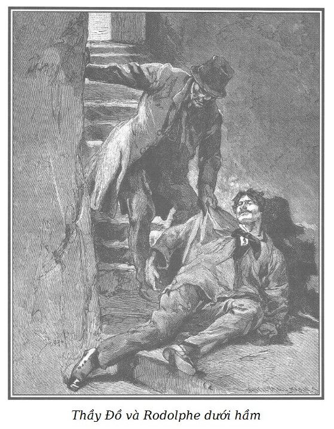

Sau cú ngã khủng khiếp, Rodolphe ngất lịm, nằm bất động dưới chân cầu thang căn hầm.

.Thầy Đồ lôi ông đến cửa căn hầm thứ hai còn sâu hơn, lão đẩy ông xuống đấy, đóng lại bằng một cánh cửa thật dày có nẹp sắt. Sau đó, lão cùng với mụ Vọ đi gây án, ăn trộm hoặc có thể giết người trong phố Gái Góa.
Chừng một giờ sau, Rodolphe dần dần hồi tỉnh.
Nằm dưới đất trong bóng tối dày đặc, ông quờ tay ra xung quanh và đụng phải những bậc đá. Cảm thấy lạnh buốt dưới chân, ông đưa tay xuống, đấy là một vũng nước. Cố gắng lắm, ông ngồi lên được bậc thang cuối cùng. Đỡ choáng váng dần, ông làm vài động tác, may thay, tay chân không bị gãy. Ông lắng nghe… Chẳng nghe thấy gì cả, chỉ có tiếng nước vỗ đùng đục, yếu nhưng liên tục.
Lúc đầu, ông không rõ nguyên nhân. Khi hồi tỉnh, miếng đòn đánh bất ngờ hiện rõ trong đầu ông, nhưng rời rạc, ngắt quãng và chầm chậm.
Sắp nhớ lại được tất cả một cách đầy đủ thì ông thấy dưới chân có một cảm giác mát lạnh mới, ông cúi xuống để xem, nước đã đến mắt cá chân. Giữa im lặng, buồn nản bao quanh, ông càng phân biệt rõ hơn tiếng nước vỗ đùng đục, yếu và liên tục.
Lần này ông hiểu được nguyên nhân: nước đang dâng lên trong gian hầm… Lũ sông Seine rất lớn và gian hầm dưới lòng đất này có cùng mực nước với nước sông. Rodolphe tỉnh hẳn. Trước mối hiểm nguy, nhanh như chớp, ông lập tức leo lên cầu thang ẩm ướt, lên đến hết bậc thang, ông đụng vào một cánh cửa, ông muốn xô ra nhưng vô ích, cánh cửa bất động trên cối bản lề sắt.
Ở trong tình thế tuyệt vọng, tiếng kêu đầu tiên của ông dành cho Murph.
Nếu ông ta không đề phòng thì con quái vật kia sẽ giết chết ông ta, và chính ta, ta đã gây ra cái chết cho ông Murph tội nghiệp.
Ý nghĩ đau đớn đó làm tăng thêm sức mạnh cho Rodolphe, xuống tấn hai chân, gồng hai vai đẩy, cố gắng phá cửa, mệt lử nhưng cửa chẳng hề nhúc nhích tí nào.
Hy vọng tìm được một cái xà beng trong hầm, ông đi xuống. Ở trước bậc cuối cùng, hai hoặc ba vật tròn tròn, nhùn nhũn chạy va vào chân ông, đấy là những con chuột cống bị nước xua đuổi ra khỏi hang ổ.
Rodolphe mò mẫm lội khắp gian hầm, nước đã lên đến nửa cổ chân, ông không tìm được gì cả, ông lại thong thả trèo lên cầu thang trong nỗi tuyệt vọng ghê gớm. Ông đếm từng bậc, và thấy có mười ba bậc, trong đó ba bậc đã ngập nước.
Mười ba! Con số xúi quẩy. Trong những tình thế nhất định con người dù có vững vàng đến mấy đi nữa cũng khó tránh được tư tưởng mê tín. Ông thấy con số đó báo trước một điềm xấu. Số mệnh bất hạnh có thể xảy ra với Murph, ông nghĩ. Ông tìm kiếm một vài chỗ hổng dưới chân cửa nhưng không có kết quả, chắc là ẩm thấp đã khiến gỗ nở ra vì cánh cửa rất sát đất và trơn.
Rodolphe hét rất to, tưởng có thể đến tai khách ăn của quán và chú ý nghe ngóng. Không nghe thấy gì hết ngoài tiếng vỗ đùng đục, yếu ớt và liên tục của nước dâng lên, vẫn dâng lên, dâng lên.
Rodolphe buông mình xuống ủ rũ, lưng tựa cửa, ông khóc cho người bạn mình có thể bị chết dưới lưỡi dao của tên giết người.
Ông cay đắng, ân hận về những hành động khinh suất và mạo hiểm của mình tuy với ý đồ rất hào hiệp. Ông đau lòng nhớ lại sự tận tâm của Murph. Bạn ông vốn giàu có, danh giá, đã xa vợ xa con thân yêu, từ bỏ những quyền lợi thiết thân để theo giúp ông trong công cuộc ăn năn sám hối bằng những hành động nghĩa hiệp anh dũng và kỳ lạ.
Nước vẫn dâng lên… Chỉ còn lại có năm bậc. Khi đứng thẳng lên gần cửa, đầu Rodolphe đụng phải nóc hầm. Ông có thể tính được từng phút hấp hối còn lại của mình, cái chết đến chậm chạp, lặng lẽ và rùng rợn.
Ông nhớ đến khẩu súng, nếu liều áp nòng súng vào cánh cửa, tuy có thể bị thương, nhưng may ra mới phá được cửa. Nhưng thật tai hại, súng đã rơi mất khi ông ngã, hoặc đã bị Thầy Đồ tước mất.
Nếu không có nỗi lo cho Murph, Rodolphe có thể chờ cái chết một cách thanh thản… ông đã sống nhiều, đã được yêu say đắm, đã làm nhiều điều thiện và còn muốn làm nhiều hơn nữa. Có Chúa chứng giám. Ông không than vãn vì tai họa ập đến với ông. Ông nhận ra trong tình huống này, một sự trừng phạt công bằng cho hành động sai lầm xưa chưa được ăn năn. Những suy tư đó mỗi lúc một tăng cùng với hiểm họa.
Một khổ hình mới lại đến thử thách sự chịu đựng của Rodolphe. Đàn chuột cống bị nước xua đuổi tìm chỗ ẩn từng bậc, từng bậc vẫn không tìm ra lối thoát. Không thể leo lên cửa tường thẳng đứng, chúng bám vào quần áo Rodolphe.
Khi chúng lúc nhúc trên người, ông thấy tởm lợm và ghê sợ không tả. Ông đuổi chúng, chúng cắn tay ông đến chảy máu. Lúc ngã, áo khoác, áo vest của ông đều phanh ra hết, ông cảm thấy trên ngực để trần có chân chuột lạnh buốt và thân chúng mềm nhũn. Ông rứt ra khỏi người và ném những con vật nhơ nhớp đó xuống nước nhưng chúng lập tức bơi lại.
Rodolphe hét lớn lần nữa, cũng chẳng ai nghe thấy. Đã đến lúc ông không còn có thể kêu la được nữa, nước đã đến ngang cổ, sắp lên đến miệng. Không khí bị nén bắt đầu thiếu trong không gian chật hẹp. Những dấu hiệu ngạt thở đầu tiên đè nặng lên Rodolphe, mạch máu thái dương đập dữ dội.
Choáng váng, ông nghĩ đến Murph lần cuối cùng và cầu Chúa, không phải để Chúa che chở, cứu ông thoát nạn mà để Người chứng giám cho nỗi đau khổ của mình.
Trong những phút cuối cùng ấy, phút sắp từ giã không những tất cả những gì đã khiến đời ông sung sướng, vinh quang người người thèm muốn mà còn cả phẩm tước vương giả, quyền hạn cao nhất nữa. Bắt buộc phải từ bỏ một sự nghiệp đồng thời thỏa mãn hai thứ ham thích bản năng: Làm việc thiện và căm ghét bọn gian ác để có thể đến một ngày nào đó được giảm nhẹ tội lỗi trước kia, sẵn sàng chết một cái chết khủng khiếp… Rodolphe không hề có một cử chỉ cuồng nộ, một hoảng loạn tuyệt vọng mà khi lâm vào hoàn cảnh đó, những tâm hồn yếu đuối thường hay đổ lỗi, thậm chí còn nguyền rủa người này người khác, nguyền rủa số phận, nguyền rủa cả Chúa nữa.
Không như họ, chừng nào ý tưởng còn minh mẫn, Rodolphe chịu đựng số phận, phục tùng và thành kính. Đến lúc gần hấp hối, không còn ý thức được nữa, hoàn toàn bị chi phối bởi bản năng, ông mới giãy giụa, giãy giụa chống lại cái chết. Có thể nói đó là sự giãy giụa của sinh lý chứ không phải tinh thần. Phút choáng váng lôi cuốn dòng suy nghĩ của Rodolphe trong vực xoáy ghê người. Nước réo trong tai, ông chơi vơi quay cuồng, mọi ý nghĩ tắt ngấm giữa lúc có tiếng chân chạy và tiếng kêu ngay gần cửa hầm.
Hy vọng đã tiếp sức cho ông. Ông nghe đâu đó có tiếng người nói, những tiếng cuối cùng ông nghe và hiểu được.
– Mày thấy không, chẳng có người nào.
– Trời đất ơi! Đúng thật… – Chọc Tiết trả lời buồn bã và bước chân xa dần.
Rodolphe rã rời, không còn đủ sức chịu đựng được nữa, tuột xuống các bậc thang.
Bỗng nhiên cửa hầm bật mở ra phía ngoài, nước trong hầm tháo ra như cống và Chọc Tiết đã có thể nắm được hai cánh tay Rodolphe đã gần chết đuối nhưng vẫn bám được vào ngưỡng cửa do động tác co giật.